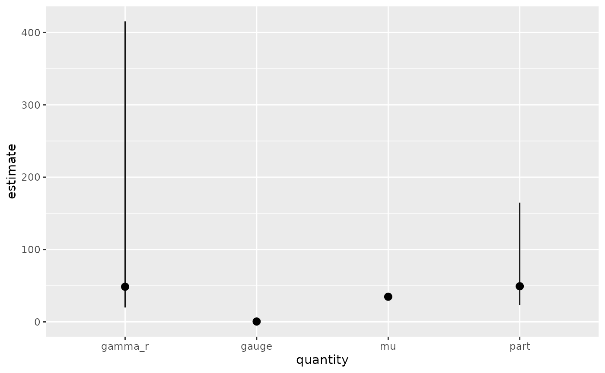

Gauge R&R Analysis
gaugerr.RmdThe goal of the gaugerr package is to make Gauge R&R analysis more convient for users by running on the tidymodels framework.
Gauge R&R Info
When working with Gauge R&R data, you want to know the capability of a measurement system. We can use statistical techniques to give a summary of confidence interval estimation for analysis of variance (ANOVA) models. These confidence intervals determine if the measurement system is capable of monitoring a manufacturing process. The package provides several functions for computing modified large sample (MLS) confidence intervals as well as a few modes of computing generalized confidence intervals (GCI), variance, mean sum of squares and point estimators.
To use any function in this package you must provide a data set of Gauge R&R data for analysis. The gaugerr package makes it easy to run the analysis with a minimal amount of details needed to be provided. The functions that run the full analysis provide the user with confidence intervals and point estimator calculations as well as the opportunity to graph these values. There are also functions for specific calculations and this document will highlight some important features of the package.
Data: example data set
example1 <- data.frame(P=c(1,1,2,3,4,4,5,5,6,6,7,8,8,9,9,10,10), O=c(1,1,1,1,1,1,1,1,1,1,1,1,1,1,1,1,1), Y=c(37,38,42,30,42,43,28,30,42,42,25,40,40,25,25,35,34))Based on observation we can see that this data set is unbalanced and only has one factor, so this gives us two options for functions. We can use gauge_rr() which is the general function that can be run on any data set or we can use unbalanced_one_factor() which is more specific to the qualities in this data set. We will walk through both examples.
gaugerr::unbalanced_one_factor(example1)
#> quantity estimate lower upper
#> 1 part 49.24444 23.2170328 164.869489
#> 2 gauge 0.50000 0.2185756 2.071166
#> 3 mu 34.75000 29.7134888 39.786511
#> 4 gamma_r 48.59444 19.9045152 415.440540
gaugerr::gauge_rr(example1, factor1=example1$P)
#> quantity estimate lower upper
#> 1 part 49.24444 23.2170328 164.869489
#> 2 gauge 0.50000 0.2185756 2.071166
#> 3 mu 34.75000 29.7134888 39.786511
#> 4 gamma_r 48.59444 19.9045152 415.440540As expected the two functions produce the same desired output which confirms our observation that this is a one factor unbalanced data set.
This package utilizes object oriented programming. The mechanics behind this idea can be a little complicated but it allows us to use the function plot() to graph the results from the data frame. The visual interpretation of the information can be valuable information.

Now that we understand an example that deals with one factor we will jump into a two factor with interaction data set next. The code below shows the construction of the data set.
example2 <- data.frame(P=c(1,2,3,4,1,2,3,4,1,2,3,4),
O=c(1,1,1,1,2,2,2,2,3,3,3,3),
Y=c(4,2,3,3,4,2,3,3,5,2,3,3))By observation we can tell that this is a balanced data set and we said above that it has interaction. This means we can run two functions on the code to get the confidence interval calculations. The two functions are balanced_with_interaction() and gauge_rr().
gaugerr::balanced_with_interaction(example2)
#> Warning in stats::qf(alpha/2, Inf, p * o * (r - 1)): NaNs produced
#> Warning in stats::qf(1 - alpha/2, Inf, p * o * (r - 1)): NaNs produced
#> Warning in stats::qf(1 - alpha/2, (p - 1) * (o - 1), p * o * (r - 1)): NaNs
#> produced
#> Warning in stats::qf(alpha/2, (p - 1) * (o - 1), p * o * (r - 1)): NaNs produced
#> Warning in stats::qf(1 - alpha/2, p - 1, p * o * (r - 1)): NaNs produced
#> Warning in stats::qf(alpha/2, p - 1, p * o * (r - 1)): NaNs produced
#> Warning in stats::qf(1 - alpha/2, o - 1, p * o * (r - 1)): NaNs produced
#> Warning in stats::qf(alpha/2, o - 1, p * o * (r - 1)): NaNs produced
#> quantity estimate lower upper
#> 1 repeat NaN NaN NaN
#> 2 part 0.8838735 0.26393736 12.6767398
#> 3 operator 0.0000000 -0.08776688 0.6643987
#> 4 part operator interaction NaN NaN NaN
#> 5 total NaN NaN NaN
#> 6 s2_repro NaN NaN NaN
#> 7 gauge NaN NaN NaN
#> 8 pg_ratio NaN NaN NaN
#> 9 tg_ratio NaN NaN NaN
#> 10 pr_ratio NaN NaN NaN
gaugerr::gauge_rr(example2, interaction = TRUE, factor1 = example2$P, factor2 = example2$O)
#> Warning in stats::qf(alpha/2, Inf, p * o * (r - 1)): NaNs produced
#> Warning in stats::qf(1 - alpha/2, Inf, p * o * (r - 1)): NaNs produced
#> Warning in stats::qf(1 - alpha/2, (p - 1) * (o - 1), p * o * (r - 1)): NaNs
#> produced
#> Warning in stats::qf(alpha/2, (p - 1) * (o - 1), p * o * (r - 1)): NaNs produced
#> Warning in stats::qf(1 - alpha/2, p - 1, p * o * (r - 1)): NaNs produced
#> Warning in stats::qf(alpha/2, p - 1, p * o * (r - 1)): NaNs produced
#> Warning in stats::qf(1 - alpha/2, o - 1, p * o * (r - 1)): NaNs produced
#> Warning in stats::qf(alpha/2, o - 1, p * o * (r - 1)): NaNs produced
#> quantity estimate lower upper
#> 1 repeat NaN NaN NaN
#> 2 part 0.8838735 0.26393736 12.6767398
#> 3 operator 0.0000000 -0.08776688 0.6643987
#> 4 part operator interaction NaN NaN NaN
#> 5 total NaN NaN NaN
#> 6 s2_repro NaN NaN NaN
#> 7 gauge NaN NaN NaN
#> 8 pg_ratio NaN NaN NaN
#> 9 tg_ratio NaN NaN NaN
#> 10 pr_ratio NaN NaN NaNThe html_vignette template includes a basic CSS theme. To override this theme you can specify your own CSS in the document metadata as follows:
output:
rmarkdown::html_vignette:
css: mystyles.cssFigures
The figure sizes have been customised so that you can easily put two images side-by-side.


You can enable figure captions by fig_caption: yes in YAML:
output:
rmarkdown::html_vignette:
fig_caption: yesThen you can use the chunk option fig.cap = "Your figure caption." in knitr.
More Examples
You can write math expressions, e.g. \(Y = X\beta + \epsilon\), footnotes1, and tables, e.g. using knitr::kable().
| mpg | cyl | disp | hp | drat | wt | qsec | vs | am | gear | carb | |
|---|---|---|---|---|---|---|---|---|---|---|---|
| Mazda RX4 | 21.0 | 6 | 160.0 | 110 | 3.90 | 2.620 | 16.46 | 0 | 1 | 4 | 4 |
| Mazda RX4 Wag | 21.0 | 6 | 160.0 | 110 | 3.90 | 2.875 | 17.02 | 0 | 1 | 4 | 4 |
| Datsun 710 | 22.8 | 4 | 108.0 | 93 | 3.85 | 2.320 | 18.61 | 1 | 1 | 4 | 1 |
| Hornet 4 Drive | 21.4 | 6 | 258.0 | 110 | 3.08 | 3.215 | 19.44 | 1 | 0 | 3 | 1 |
| Hornet Sportabout | 18.7 | 8 | 360.0 | 175 | 3.15 | 3.440 | 17.02 | 0 | 0 | 3 | 2 |
| Valiant | 18.1 | 6 | 225.0 | 105 | 2.76 | 3.460 | 20.22 | 1 | 0 | 3 | 1 |
| Duster 360 | 14.3 | 8 | 360.0 | 245 | 3.21 | 3.570 | 15.84 | 0 | 0 | 3 | 4 |
| Merc 240D | 24.4 | 4 | 146.7 | 62 | 3.69 | 3.190 | 20.00 | 1 | 0 | 4 | 2 |
| Merc 230 | 22.8 | 4 | 140.8 | 95 | 3.92 | 3.150 | 22.90 | 1 | 0 | 4 | 2 |
| Merc 280 | 19.2 | 6 | 167.6 | 123 | 3.92 | 3.440 | 18.30 | 1 | 0 | 4 | 4 |
Also a quote using >:
“He who gives up [code] safety for [code] speed deserves neither.” (via)